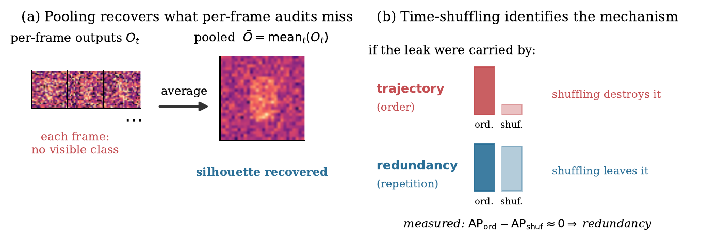

A segmentation model labels every pixel of a video: person, car, road, sky. Class unlearning asks it to forget one label, say person, without retraining from scratch, so that the person can no longer be found in what the model outputs.
Looking at one frame at a time, the person is gone. But if you average the model's outputs over about two seconds of video, a faint trace adds up and the person comes back. In our tests nearly every published method that keeps the model usable still leaks this way.
PACE trains the model against an attacker that does exactly this averaging, and adds a rule that stops the model from hiding the trace by freezing it in place. The person stays forgotten even when frames are pooled.
Each small frame below is mostly noise with a very faint blob in the middle, like a model whose output on any single frame looks clean. Slide to average more frames of the clip.
A toy picture with made-up numbers, not output from our models. It shows why averaging works on a faint but repeated trace, and why it does not care about frame order.
One validation clip from VSPW, 16 frames spanning about two seconds. Pick a model. The middle panel is what a frame-by-frame check sees. The right panel is what an attacker recovers by pooling the model's outputs over the clip.
The tiles are small because that is the resolution they were rendered at. This is one clip and one quick attacker run (250 training steps), so it illustrates the effect. The tables further down are the measured result.
The same clip as above, looping. Generated by scripts/make_qual_video.py.
There are two things an attacker could use. The path the person takes through the video, or the same faint trace simply repeating in every frame. To tell them apart we scramble the frame order and run the attacker again. If the path mattered, scores would drop. They barely move, so repetition is what carries the leak.
Attacker score (average precision, out of 100) on VSPW person with a 3-frame clip. From the paper's table of adversary scores by model.

All three edit the same model and share the same training setup. They differ only in what the attacker is allowed to see and in the extra rule added to the penalty.
Two questions for each method. Can an attacker still find the class? (lower is better, and below the black line means no leak found.) Does the model still do its job on everything else? (higher is better.)
| Method | Attacker scoreaverage precision, lower is better | Model still worksmean IoU on the other classes, higher is better | In plain words |
|---|
The black line is the leak line: the retrained model's score plus two of its trial standard deviations, the paper's rule for calling a model safe. The grey bar for the original model shows how much accuracy the model had before unlearning. Keeping under a tenth of the original accuracy is described as badly damaged, under a quarter as much lower, and under half as lower. That wording is this page's, not a rule from the paper. Numbers are copied from the paper's tables and each score averages two attacker trainings.
@misc{tyagi2026beyond,
title = {Beyond the Frame: Redundancy, Not Trajectory, Carries the Privacy Leak in Video Unlearning},
author = {Tyagi, Kavyansh and Russo, Paolo},
year = {2026},
eprint = {2610.27982},
archivePrefix = {arXiv},
primaryClass = {cs.CV},
url = {https://arxiv.org/abs/2610.27982}
}